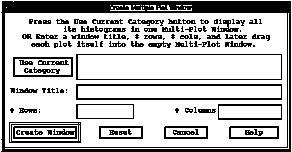
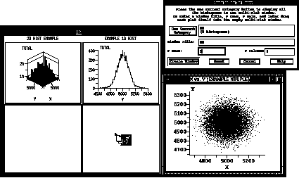

Figure 11. Create Multiple Plot Window
There are two ways these multiple-plot windows can be populated with plots:
1) All the 1-D and 2-D Histograms in the current category (as listed in the Histo-Scope Main Window) can be displayed in a single multi-plot window. To do this, click on the Use Current Category push button. Histo-Scope will automatically fill in the multi-plot window title and a default number of rows and columns that will accommodate the number of histograms in the current category. The window title, # Rows, and # Columns can be modified by the user as desired.
2) For more flexibility, don't press the Use Current Category button. Instead just type the window title and number of rows and columns for the Multiple Plot window, and after pressing "Create Window" use the mouse to drag the plots one-by-one into the initially empty multi-plot window. This method gives you the most flexibility for choosing and placing plots for display.
Click on the Create Window button to create the Multiple Plot window. To insert plots of Ntuple variables into a multiple plot window, leave one or more mini-plot "cells" empty and use the middle mouse button to drag a plot onto the empty cell of the mini-plot. (To drag the plot, press the middle mouse button while the pointer is over the plot area of the desired Ntuple plot, and, while holding the mouse button down, move the mouse pointer over to the empty mini-plot area, and then release the middle mouse button. When you press the middle mouse button, the pointer changes to indicate that your are initiating a drag.)

Figure 12. Dragging an Ntuple Plot into a "Mini" Plot
To change the size of the individual plots in Multiple Plot windows, use Motif window controls such as the window sides or corners to make the entire window larger or smaller.
Each mini-plot in the Multiple Plot window allows you to adjust its plot settings in a manner similar to the individual plot windows. To bring up a Plot Settings menu, point to the plot with the mouse and press the right mouse button.